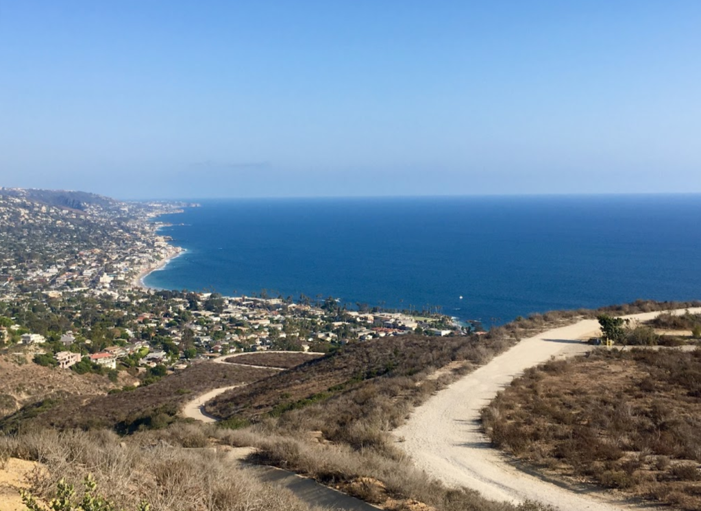

Why Laguna Beach?
Trails, Art & Beaches
Laguna Beach is a small coastal city in Orange County, California. It is known for its many art galleries, coves and beaches. Main Beach features tide pools and a boardwalk that leads to the trails and gardens of the Heisler Park location. Aliso Beach Park is a popular surfing spot. The waters at Crystal Cove State Park automatically become an underwater park. Trails wind through coastal canyons at Laguna Coast Wilderness Park. The city of Laguna Beach is a small town of picturesque beaches, hiking trails, a walkable downtown and summer art festivals.